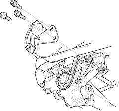
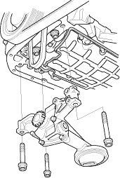
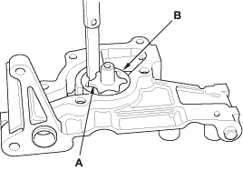
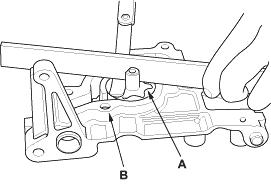

Oil Pump Removal
- Remove the oil pan (see page 7-12).
- Remove the oil pump chain tensioner.

- Remove the oil pump.


Oil Pump Inspection
- Remove the pump cover.
- Check the inner-to-outer rotor radial clearance between the inner rotor (A) and outer rotor (B). If the inner-to-outer rotor radial clearance exceeds the service limit, replace the oil pump.
Inner Rotor-to-Outer Rotor Radial Clearance
Standard (New):
0.02 - 0.15 mm
(0.001 - 0.006 in.)
Service Limit:
0.20 mm (0.08 in.)

- Check the housing-to-rotor axial clearance between the rotor (A) and pump housing (B). If the housing-to-rotor axial clearance exceeds the service limit, replace the oil pump.
Housing-to-Rotor Axial Clearance
Standard (New):
0.02 - 0.07 mm
(0.001 - 0.003 in.)
Service Limit:
0.12 mm (0.005 in.)
